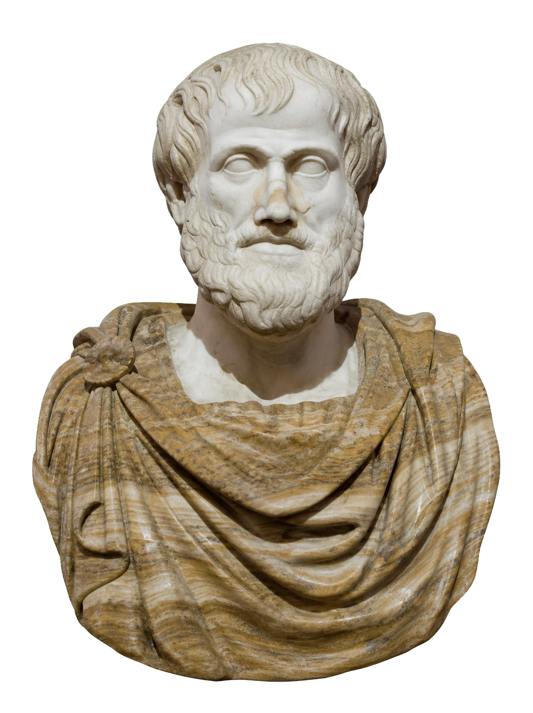
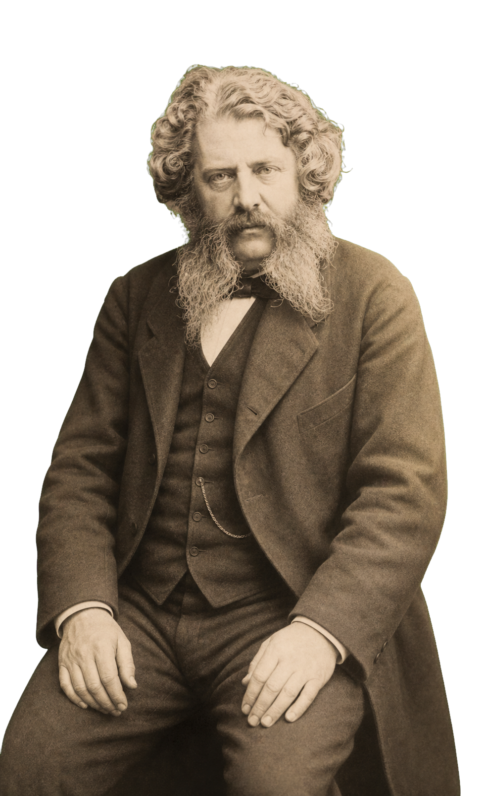
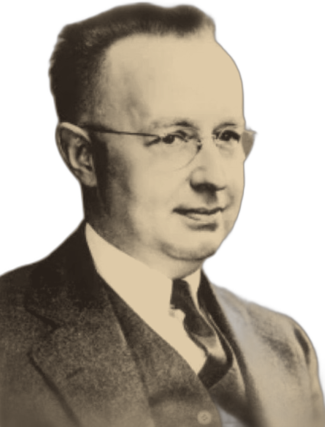

Koskela · Pikas · Niiranen · Ferrantelli · Dave · IGLC 2017
Os fundamentos filosóficos ocultos por trás das falhas crônicas do setor
Grupo
02 · Como vamos apresentar
1
O Problema Oculto
Causas dispersas ou uma raiz comum?
2
Bases do Conhecimento
De onde vem o conhecimento?
3
As Origens
Quem fundou as duas tradições?
4
A Difusão
Como o platonismo dominou?
5
As Patologias
Onde o excesso adoece a obra?
6
A Solução
Como reequilibrar?
Em vez de percorrer o artigo seção por seção, organizamos a apresentação em torno das perguntas que ele investiga. Duas são feitas explicitamente pelos autores; as demais reconstruímos a partir da lógica do texto. Cada slide levanta uma pergunta e entrega a resposta do artigo.
03 · O Problema Oculto
As causas dos problemas da construção são abundantes e dispersas, ou existe uma causa-raiz que poderia ser remediada com esforço concentrado?
→ Resposta do artigo
Existe uma causa-raiz sistematicamente negligenciada: as escolhas epistemológicas inadequadas na engenharia e na gestão.
Sintomas visíveis (a ponta do iceberg)
04 · Bases do Conhecimento
O conhecimento vem do mundo das ideias.
Raciocínio dedutivo: parte de axiomas e teorias abstratas em direção à prática. O mundo físico é visto como imperfeito — o projetista desenha o "plano perfeito" e espera que a obra se adapte a ele.

De onde vem o conhecimento para projetar e planejar?
O conhecimento começa na observação do mundo real.
Raciocínio indutivo (conceitos a partir de fatos) e abdutivo (hipóteses/diagnósticos). O plano se adapta às restrições físicas encontradas.

05 · As Origens Intelectuais
Séc. XIX · O pai da engenharia científica. Aplicou a física matemática para prever o comportamento das estruturas. Tratou os ajustes manuais da execução como imperfeições inferiores.
| Foco | Perfil |
| Design | Leis universais |
| Raciocínio dedutivo | Solução "ótima" teórica |

Rankine e Shewhart são os herdeiros concretos das duas epistemologias
Séc. XX · O pai da qualidade. Buscou o controle empírico da variabilidade física na produção. Criou o controle estatístico de processo e o ciclo PDCA.
| Foco | Perfil |
| Produção | Variabilidade física |
| Raciocínio indutivo | Aprendizado cíclico |
06 · A Difusão Histórica
Pós-1945 · difusão desigual das duas tradições
→ Resposta do artigo
Reformas educacionais e os relatórios de 1959 consolidaram o platonismo como paradigma dominante; o aristotelismo sobreviveu à margem, no chão de fábrica.
07 · Patologias na Construção (I)
Detalha-se o plano no papel ignorando a construtibilidade física. O projetista "joga" as plantas por cima do muro — e os operários do outro lado que resolvam a execução.
A superespecialização faz cada disciplina (estruturas, elétrica, hidráulica) trabalhar isolada, sem colaboração real durante o design.
08 · Patologias na Construção (II)
Quando o plano dedutivo encontra a obra real
50%
das tarefas semanais planejadas acabam realizadas.
Ballard (2000), observação recorrente do início dos anos 1990.
O plano só parte quando a frente está pronta. A observação da produção autoriza o compromisso.
“In any free market economy businesses will never waste inputs…”
09 · A Solução
Síntese, não exclusão
10 · Discussão Crítica & Fechamento
1
Quão viável é mudar currículos de engenharia hoje?
2
Lean Construction e BIM integrado conseguem unir o design conceitual à produção colaborativa?
3
O ensino da nossa universidade ainda é majoritariamente platônico?
KOSKELA, L.; PIKAS, E.; NIIRANEN, J.; FERRANTELLI, A.; DAVE, B. On Epistemology of Construction Engineering and Management. IGLC 25, 2017, p. 169–176. DOI 10.24928/2017/0336.